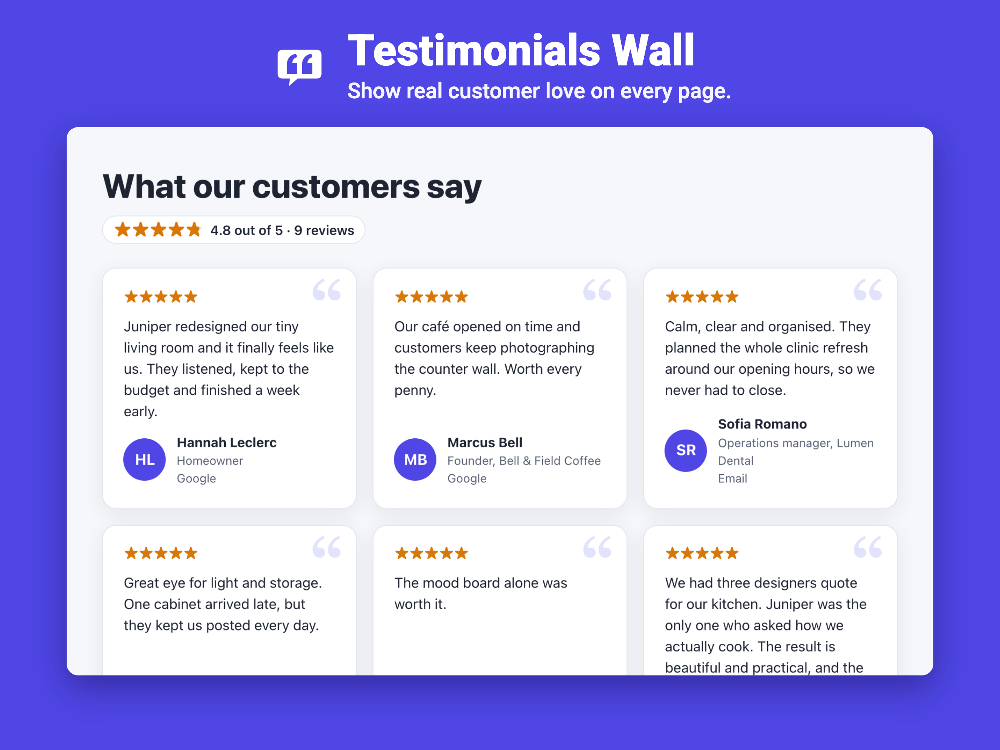

Testimonials Wall & Slider for Wix
Show what real customers say, beautifully, on any page of a Wix site, and collect new testimonials that appear only after you approve them.

What it does
- Six layouts: card grid, carousel, simple list, masonry wall, a gliding ticker and one big rotating quote.
- One testimonial library for the whole site; each wall can show everything, one tag, or only 4★ and up.
- A collect form under the wall: visitors send a testimonial, you approve it before anyone sees it.
- Paste dozens of testimonials at once from Google Sheets or Excel.
- Exact rating summary (“4.8 out of 5 · 87 reviews”), source labels with links to the original reviews.
- Eight themes, your colors and font, editable wording for any language, right-to-left support and keyboard access.

Guides
Questions
Do I need a paid plan?
No. The Free plan includes one live wall with up to 12 testimonials, the grid, carousel and list layouts, three themes, the collect form, spreadsheet import and the rating summary. Premium adds unlimited walls, up to 200 testimonials per wall, all layouts and themes, your colors and font, and removes the credit line.
Will removing the widget delete my testimonials?
No. Testimonials are kept in their own library, separate from the walls and widgets that show them.
Can search engines read the testimonials?
The text is part of the page itself rather than an embedded frame.
Testimonials Wall & Slider — free plan with one live wall; Premium from $4.90 per month.
See it in the Wix App Market
See it in the Wix App Market